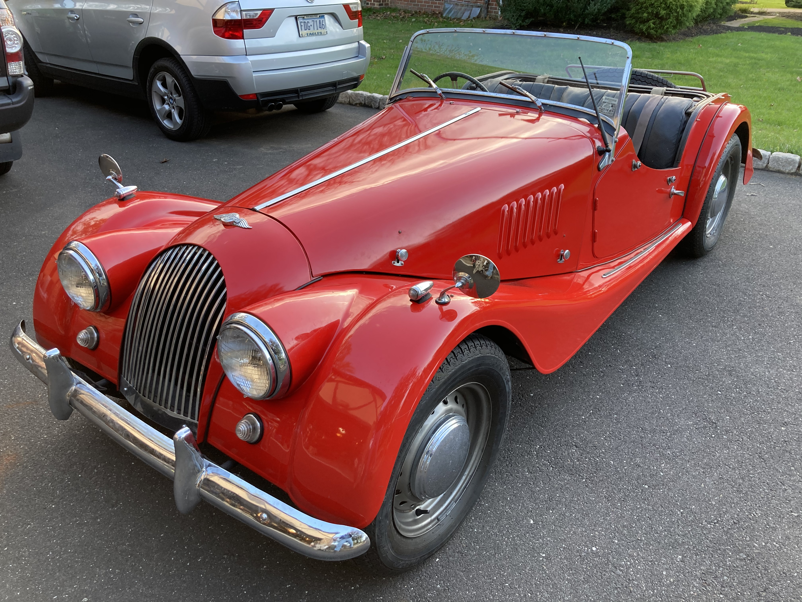

The Morgan belonged to my Godmother. It is the very first Series V and we believe it may be a competition spec.

I'd heard about the car since I was a teenager in the 1980s, but at that time it was away having work done. It wasn't until 2020 that I actually saw it in person, after the car had been stolen, recovered, held at a police impound lot. I helped to retrieve it and, since it had been sitting for a while, towed it to my garage to assess.
The bodywork was still in good shape, and all that needed to be done was to fabricate new door panels and armrests. There is a battery cut-off switch that was mounted to the parcel shelf which made it a challenge to remove; I mounted it to the frame instead. I also straightened the bumpers a bit, replaced dried out rubber gaskets, and polished all the chrome.


I squirted some oil in each cylinder and then turned to the brakes. Original equipment was a shared reservoir for the clutch and single-circuit brake master cylinder. I changed these for a dual-circuit brake master cylinder and a separate clutch master cylinder, each with their own reservoir. This involved bending and flaring two new lines from the master cylinder: one ('S') to the original four way splitter (now a three way splitter to serve the front brakes) and a second ('P') to the rear brakes.
The starter motor chose to retire at this point, so a new high torque replacement was installed, along with a shiny new engine grounding strap. The weak ground may have contributed to the rectifier also giving up the ghost, so it was replaced along with the engine bay starting button.
All of this work, along with setting the timing and adjusting the carb, transformed the car from 'iffy' to solid, and culminated in my godmother and her son taking the car for a spin for the first time in years.
My godmother passed away a few months later.
I visited the factory in Malvern, Worcestershire, United Kingdom and took these pictures during a tour of the facility.